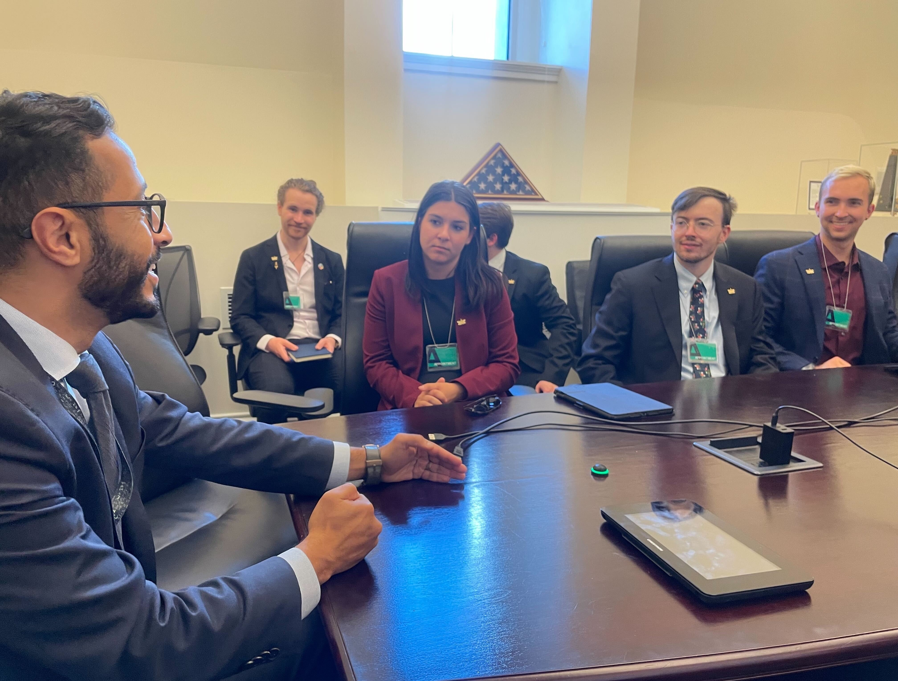
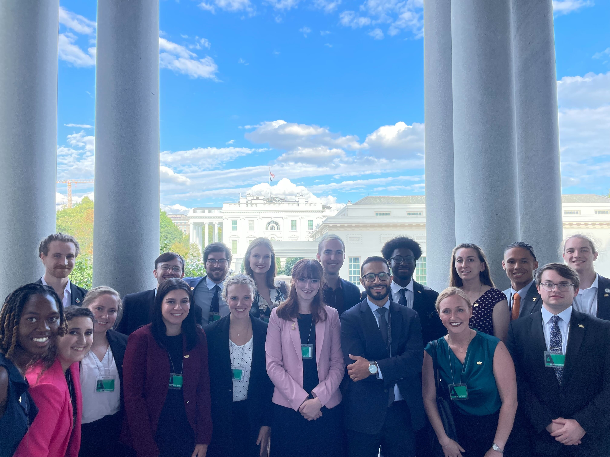
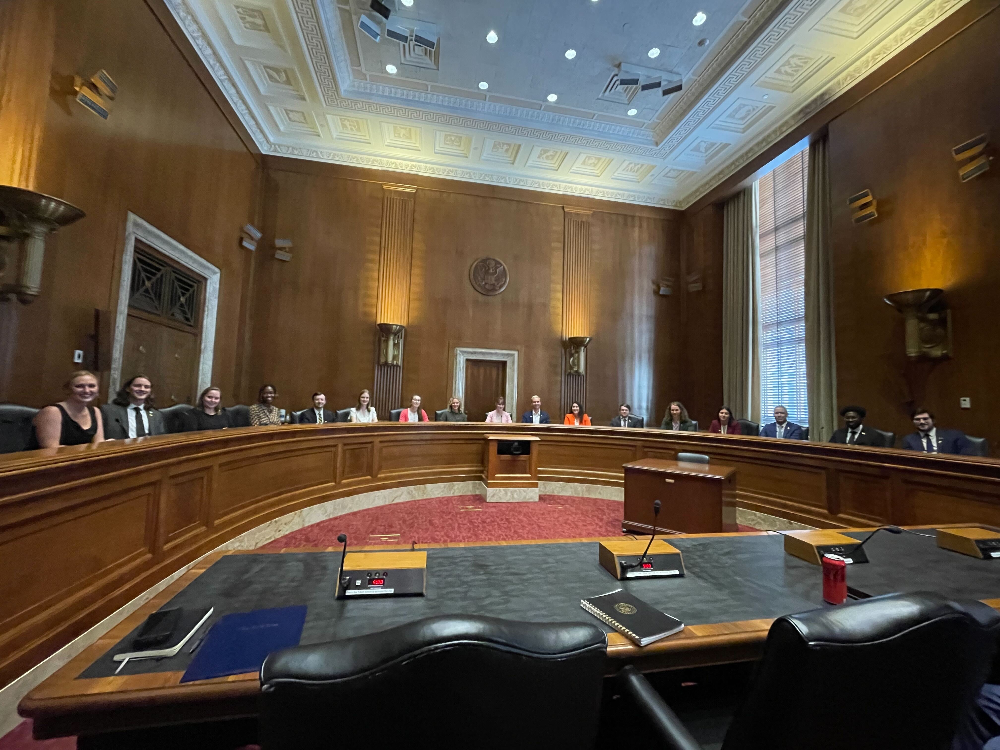

If you have any interest crossing the line between your more technical experiences and policy/government at all, you'll likely find yourself wanting to set up meetings with the offices of elected officials who represent you or sponsor bills related to your work. I don't know about you, but this isn't something I was formally taught in classes (if you were, please email me so I can take that course). I've put together 7 general points to guide your early experiences.

This advice is pretty general to any situation you might find yourself as a technical person acting in a policy space. I hope they will give you a sense of what you're walking in to if it's your first time, and serve as a convenient reminder if it isn't. You shouldn't try to do this all yourself, reach out to your institution's governmental affairs office and ask them to help you plan everything out. This planning should include strong consideration for the time it takes to get from building to building and through the metal detectors. Before you make your way to DC, work to schedule meetings with legislator’s offices from 3 important areas:
Your districts (including school, and any places you’ve lived before).
Influential committees in the House and Senate (House/Senate Energy and Natural Resources, Senate Environment and Public Works—subcommittee on clean air and climate).
Legislators who have introduced/sponsored nuclear bills you care about (probably going to be the same as committee people in the house, may not be the same in the senate).
The last thing I'll say before we get into the actual points is on the metro, you should absolutely take advantage of the public transportation in the city. If you don’t have a metro card, you should pick one up from the first metro station you see. Throughout the week, we’ll be traveling around DC and you’re going to want to have access to the metro and buses. You can also add this card to your phone’s wallet pretty easily for mobilepay. You can find a pretty easy map on the WMATA website that can guide you, but honestly your maps app is your friend. Remember to have enough on your card to enter and exit the station, because you need to scan your card/phone as you enter and exit.
1. Expectation Setting
From the start, you should ask the people you're meeting with what their time restrictions are. From a member, you’ll get maybe 15 minutes, staffers will probably get 30 minutes. Be on time (5 minutes early where possible), expect them to take a minute or two to be ready. Don’t chew gum. Have fun, there are gift shops in both the house (in Longworth near the cafeteria) and senate (between Derkson and something in the tunnel by the cafeteria).
2. Knowing your Audience
Do a quick Wikipedia search for connections, checkout the staffers if you can too. Treat them as if they’re the member, even if they're a legislative correspondent (the lowest on the totem pole). Use the title of the bill and the H.R. or S. number, unless you’re sure they’ll know it already from your research into them. Some questions to write up answers before you go:
Have they co-/sponsored any of the bills you want to talk about?
What is the energy mix of the state?
Do they have any nuclear plants/facilities/hubs/companies in their district?
What committees do they sit on?
Have they done anything with education or educational programs?
Where’d they go to school?

3. Getting to your Asks
If they haven’t signed on to a bill the staffer won’t be able to give you a yes or no, but you can ask for a co-sign. You should front load your specific policy asks, and add context and explanation as you go along. These asks should be somewhat tailored to each representative (it’s not possible for someone from the senate to vote on house bills, but you can encourage them to support it in their body).
4. Communicating your Ideas
Focus on policy and not politics. Don’t assume anything because of their party, especially on energy. If the staffer is on the committee you can do greater detail, but otherwise start with a 6th grader level. If you sense you’ve lost them, take a breath and ask them a question. Try not to use acronyms, treat them like adults not experts. The first time you use a word, use the full name and maybe use the acronym later (probably best not to).
4.1 Accuracy vs Precision
In your STEM courses and in logical tradition, we are encouraged to focus on being precise with our words---in my abstract blog, I say that you should limit adverbs for this very reason. When you communicate technical content, we need to value accuracy. Focusing on accuracy first, you will not lose your audience or distract yourself from the real reason you're there by equivocating and qualifying in real time.
I think the analogy that communicates this clearly is a dartboard (I certainly didn't come up with this, and I have no idea who did). If you have low accuracy but high precision, the darts will be near each other but not near the bullseye. If you have high accuracy and low precision, the darts will all be centered around the bullseye. In an ideal situation, you can be both highly accurate and precise, but, when you have 30 minutes with someone who has energy, security, environment, housing, and k-12 schooling (this was a staffer I met with) in their portfolio, you need to get to the point.
5. Sharing what you've Heard
You may have heard from other governmental organizations, some of them may have shared personal opinions with you, you don’t speak for them and they don’t officially have opinions about funding. If there’s something you want to bring up, find the receipts online and bring it up in the context of your concerns about it.

6. Analogies Enhance Memorability
I work in fuel cycles, so when I’m explaining what that is to people I often talk about supermarkets or bakeries (milling flour and bagging ingredients before sending it to the bakery). Some other things you might consider including are size comparisons (e.g., building a conventional LWR can be like building an airport, and some advanced reactors are the size of a truck).
7. Followups
It’s really good to have a follow up. An easy one is to send the electronic version of the policy statement. To check the progress of bills, get updates from the gov website. Touch base not more than 2 weeks later if it’s busy, not more than a month if it’s not. Articles, interviews, questions you have for later, are good followups as well. If you weren’t able to get meetings with specific representatives, you can always followup with a zoom meeting in the following weeks.